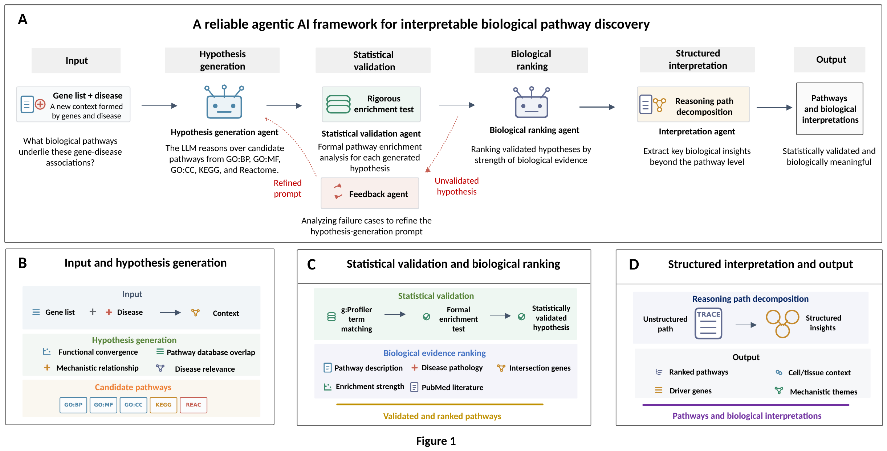

A closed-loop, agentic framework for statistically grounded, LLM-driven pathway analysis. The LLM becomes reliable only when its reasoning is constrained by statistical validation, explicit feedback, and biological context — yielding pathways that are statistically validated and biologically meaningful.
Conventional enrichment tools tell you which terms are over-represented — but not why one term should be prioritized over a related one, whether a plausible pathway is actually supported by the genes, or how pathways combine into a disease-relevant narrative. Large language models propose fluent pathway names, yet in zero-shot settings many are broad, weakly matched, or unsupported by FDR-controlled enrichment. This framework closes the gap between linguistic fluency and statistical reliability: a closed loop that proposes hypotheses, tests them against g:Profiler under FDR control, corrects them with explicit feedback, and ranks them by biological evidence.

Every hypothesis faces a formal g:Profiler enrichment test under FDR control before it is retained.
Validated pathways are ranked by biological evidence, tied to cell and tissue context, and informed by a cross-disease memory bank that transfers recurrent patterns.
A feedback agent analyzes unvalidated hypotheses and refines the generation prompt, so generation improves with each iteration.
Reasoning-path decomposition turns the model's reasoning path into structured insights: driver genes, cell/tissue context, mechanistic themes.
Click any stage to see what its agent does, which code module runs it, and an example of the data flowing in and out. The example below traces one real Alzheimer's disease module (walktrap module 105, 14 genes) through the full pipeline.
Disease: Alzheimer's disease (AD)
MeSH: D000544 · resolved from NCBI
Module: walktrap module 105 · 14 genes
🧬 Functional convergence — shared biology across the module genes
🔗 Pathway database overlap — GO / KEGG / Reactome coverage
➕ Mechanistic relationship — how genes connect to each term
🩺 Disease relevance — link to AD biology
Alzheimer disease term) are analyzed by the Feedback Agent, which refines the prompt toward the module's specific synaptic and cell-adhesion biology. Across the 24-disease benchmark, this validation-guided feedback lifts the non-redundant functional discovery rate (nFDR) from 29.0% to 42.2%.
📄 final_aggregated_pathways.csv
🗂️ final_module_metadata.json
📝 *_reasoning.md audit traces
📊 validation & category plots
AD module 105 converges on synaptic structure and cell–cell adhesion — adherens junction, postsynapse organization, and axon guidance — implicating synapse loss and network disintegration as its contribution to AD, with an endocytic-trafficking component linked to APP processing — each traceable to the genes and enrichment that support it.
All values are taken directly from the Alzheimer's disease run (walktrap module 105, memory-bank external): genes (the Ensembl IDs stored in the module file), candidate pathways, g:Profiler P-values, validation outcomes, and ranking. Some values are abbreviated for display.
Point the orchestrator at a disease; it resolves the disease metadata automatically and analyzes each network module.
# 1 · install git clone https://github.com/Grit1021/Agentic_AI_platform.git && cd Agentic_AI_platform pip install -r requirements.txt # 2 · configure credentials export OPENAI_API_KEY="sk-..." export ENTREZ_EMAIL="name@example.com" # 3 · run the full pipeline for Alzheimer's disease python -m refined.orchestrator --disease AD --tag full_run
# fast smoke test — a couple of modules python -m refined.orchestrator --disease AD --test --tag test_run # disable cross-disease memory bank python -m refined.orchestrator --disease AD --test --no-memory # any disease — abbreviation or full name (MeSH-resolved) python -m refined.orchestrator --disease PD # Parkinson's python -m refined.orchestrator --disease "Breast Cancer"
OPENAI_API_KEY — required. Powers generation, feedback, ranking, and interpretation. The central reasoning model is GPT-5.1 (gpt-5.1), configurable.
ENTREZ_EMAIL — recommended. Enables PubMed / Entrez evidence retrieval without throttling.
LLM responses are deterministically disk-cached under ~/.cache/pathway_analysis/, making re-runs stable and cheaper.
Five agents, one orchestrator, and the tools that ground them in formal statistics and literature.
| Agent | Role | Module |
|---|---|---|
| 🤖 Hypothesis Generation | Proposes candidate pathways across five functional sources from module genes + disease | agents/hypothesis_generation_agent.py, predictor.py |
| ✅ Statistical Validation | Formal g:Profiler enrichment test; writes matched / FDR / nominal contract | agents/statistical_validation_agent.py |
| 🔁 Feedback | Analyzes failure cases to refine the generation prompt between iterations | agents/feedback_agent.py, prompts/feedback.py |
| 📊 Biological Ranking | Ranks validated pathways within each functional source by synthesizing five evidence sources | agents/biological_ranking_agent.py |
| 🧩 Interpretation | Decomposes the reasoning path into structured cross-pathway insights | predictor.py, backend/reasoning_parser.py |
orchestrator.pyCommand-line entry point & pipeline coordinatorconfig.pyDisease configuration (MeSH / NCBI lookup)framework.pyIterative framework wired to the feedback agentpredictor.pyHypothesis generation + reasoning-audit tracesllm_client.pyLLM client + disk cachereport.pySummary report generationvisualization.pyValidation & category plotsagents/The five specialized agentsprompts/Generation · feedback · reasoning-audit templatestools/PubMed · ranking · g:Profiler cachebackend/Bundled runtime (multi-agent analysis, memory bank)docs/This demo homepageassets/Figure 1 (PNG / PDF)Each run writes to iterative_feedback_{DISEASE}/{DISEASE}_aggregated_{TIMESTAMP}_{TAG}/.
If you use this framework, please cite the paper. Replace the placeholders with your final publication details.
@article{AUTHOR_YEAR_agentic_pathways,
title = {A reliable agentic AI framework for interpretable
biological pathway discovery},
author = {[Authors]},
journal = {[Journal / Preprint]},
year = {[Year]},
url = {https://github.com/Grit1021/Agentic_AI_platform}
}